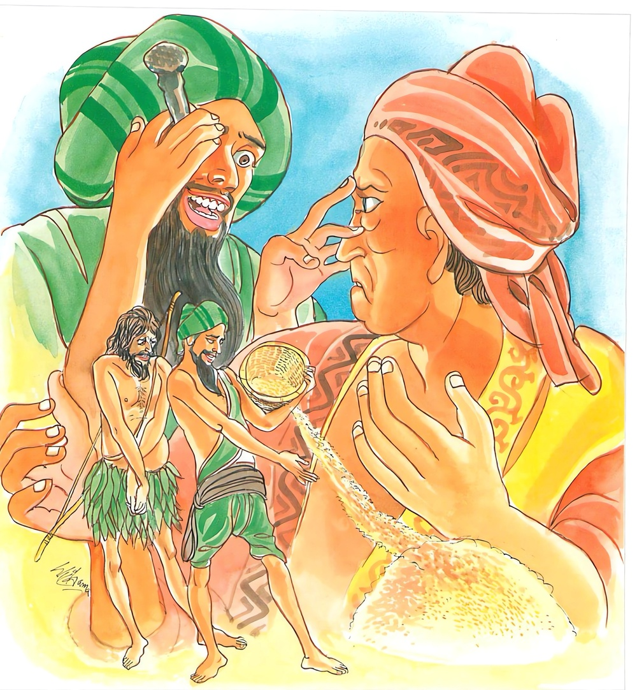

18-10 මෙණ්ඩක සිටුවරයාගේ කථා පුවත
මෙම කතාව සද්ධර්ම සාගරයෙන් ද කියවන්න.
සුදස්සං වජ්ජමඤ්ඤෙසං අත්තනො පන දුද්දසං
පරෙසං හි සො වජ්ජානි ඔපුණාති යථා භූසං
අත්තනො පන ඡාදෙති කලිං’ව කිතවා සඨො.
අනුන්ගේ අණුමාත්ර වූ වරද සුව සේ දැක්ක හැක්ක. තමාගේ වූ කලි මහත් වූ වරද ද දැක්ක නොහෙන්නේ ය. ඒ අනුන්ගේ වරද සොයන පුද්ගල තෙම මඳ වූ ද අනුන්ගේ දෝෂයන් උස් තැනෙක සිට රොඩු බොල් පොළන එකක්හු මෙන් පොළන්නේ ය (නගා පාන්නේ ය). තමාගේ වූ කලි මහත් වරද පවා වසන්නේ ය. (පැටි කරන්නේ ය, වළහන්නේ ය). කොළ පැලැලි ආදියෙන් සිරුර මුවහ කරණ වංචක ලිහිණිවැද්දා මෙනි.

"සුදස්සන්ති” යන මේ ධර්මදේශනය ශාස්තෲන් වහන්සේ භද්දිය නුවර ඇසුරු කොට ජාතියා වනයේ වැඩසිටියදී මෙණ්ඩක සිටුවරයා වෙනුවෙන් දේශනා කළහ.
බුදුහු අඞ්ගුත්තර පෙදෙසේ චාරිකාවේ යෙදෙමින් මෙණ්ඩක සිටුවරයාගේද භාර්යාව වු චන්ද පදුමාගේ ද පුතණුවන් වන ධනඤ්ජය සිටුවරයාගේ ද, ලේලිය වන, සුමනා දේවිය ගේද, මිණිබිරිය වු, විසාඛා වගේද, දාසයා වු පුණ්ණද, යන මේ අයගේ සෝවාන් ඵලයට උපනිශ්රය දැක භද්දිය නගරයට ගොස් ජාතිය වනයේ විසුහ. මෙණ්ඩක සිටුවරයා බුදුන් වැඩම කළ බව ඇසුවේ. මෙණ්ඩක සිටුවරයාට මේ නම ලැබුනේ කෙසේද?
ඔහුගේ ගෙදර පිටුපස අට කිරියක් පමණ තැන් ඇත් අස් - ගොන් පමණ රන් බැටළුවෝ පොළව පලා විටෙන් විට ගැටෙමින් ඇතිවුහ. ඔවුන්ගේ කටේ පස් පැහැ ඇති පලස් විවීමට ගන්නා, නුල් ගුලියක් තබන ලද්දේය. ගිතෙල් මී පැණි ආදීන් හෝ හඳින පොරෝනා වස්ත්ර හෝ රන් - රුවන් - ආදීන්ගෙන් හෝ ප්රයෝජනයක් ඇති වු විට ඔවුන්ගේ කටින් දඹදිව වාසින්ගේ ප්රයෝජනයට ප්රමාණවත් තරම් එම භාණ්ඩ නිකුත් වෙයි. මෙතෙක් බැටළුවන් සිටියත් එකකුගේ කටින් වුවත් නූල් ගුටිය ගැළ වූ නම් මුළු දඹදිව් වැස්සන්ට අවශ්ය සම්පත් ප්රමාණය ලබාදෙයි. ඒනිසා එතැන් පටන් ඔහුට මේ මෙණ්ඩක සිටුවරයා යන නම ලැබුනි. මොහුගේ පෙර කරන ලද කුශල කර්මය නම්, විපස්සි බුද්ධ කාලයේදී මොහු අවරෝජ නම් කෙළෙඹියාගේ බෑනා ඒ මාමාගේ නම හා සමාන නම වු අවරෝජ යන නම් විය. අනතුරුව මේ මාමා බුදුන්ට ගඳකිළියක් කරන්නට පටන් ගත්තේය. ඔහු මාමා සමීපයට ගොස් අපි දෙදෙනාම සහායෙන් කරමුයි. ඔහු විසින් පිළිගත් කළ මේ ස්ථානයේ කුඤ්ජර ශාලානමින් මණ්ඩපයක් කිරීම වටී යයි සිතා කැලයෙන් ද්රව්ය ගෙන්වා ගෙන එක් කණුවක් රන් ඔබවන ලදී. එකක් රිදී ඔබවන ලදී. එකක් මැණික් ඔබවන ලදී. මෙසේ මහත් කණු - දොරකවුළු - ජනෙල් - නොගැස්ස පුවරිටු උළු යන සියල්ල රන්වලින් ඔබ්බන ලද
කළේය. ඒ මණ්ඩපය මැණික්මය පබලුමය මුදුන් කොන්විය. කුඤ්ජර ශාලාවේ මැද මැණික් මණ්ඩපයක් කරවා ධර්මාසනයක් පිහිටුවීය. එහි සණරත්න සවර්ණමය පාදවිය. එලෙසට සතර පාද වීය. රන් බැටළුවන් සිවුදෙනෙක් කරවා ආසනයේ කකුල් සතරට තැබීය. බැටළුවන් දෙදෙනෙක් කරවා පාපුටු උඩ වට සවිකළේය. රන් බැටළුවන් සදෙනෙක් කරවා මණ්ඩපය වටකොට තැබුවේය. ධර්මාසනය වටකරමින් තැබුවේය. ධර්මාසනය පළමුව රැහැන්වලින් වියවා මැද රන් හුය රැහැන්වලින්ද උඩ පටහුය වලින්ද වියවා එහි මැද සඳුන්මය. හේත්තුවන පිටාවුවක් තැබීය. (ඵලක තැබීය) මෙලෙස කුඤ්ජර ශාලාව නිමවා පුජා උත්සවය කරන්නේ භික්ෂූන් එක්ලක්ෂ සැට අට දහසක් භික්ෂූන් සමග බුදුන්ට ආරාධනා කර සිව්මසක් දන් දී අවසාන දිනයේදී තුන් සිවුරු පිළිගන්වීය. එහි අළුත් භික්ෂූන්ට දහසක් වටිනා සිවුර දෙවීය. මේ ලෙසට හෝ විපස්සී බුද්ධකාලයේදී පින් සිදුකර ඉන් චුතවුයේ දෙවියන් අතර මිනිසුන් අතරද සැරිසරමින් මේ කල්පයේ බරණැස මහත් භෝග ඇති සිටු කුලයක ඉපදී බරණැස සිටුවරයායයි ප්රසිද්ධ විය. ඔහු දිනක් රාජ උපස්ථානයට යන්නේ පුරෝහිතයා දැක කිම ආචාර්යන් වහන්ස ශුභ නැකත් මුහුරතයක් සිහි කරමුදැයි විමසුවේය. ඔව් සලකාබලමි. කිම අපේ අනෙක් කර්මයක්ද එසේ නම් ජනපද චාරිකා කෙබඳුද? එක් බියක් ඇතිවේ. කවර බියක්ද? සාගතයක් පිළිබඳ බියකි. තව ද සිදුවන්නේද මෙයින් අවුරුදු තුනකට පසුවය. මෙය අසා සිටුවරයා බොහෝ කෘෂි කර්මාන්ත කරවා ගෙදොර ධනය ඇතත් ධාන්යම අරගෙන කොටු දොළොස් සියයක් කරවා සියළු කොටුවල වී පුරවාලීය. කොටු නොපොහොනා විට මහවැළි ඇදියෙහි පුරවා ඉතිරිය බිම වලවල් සාරවා නිධන් කළේය. ඉතිරිය මැටි සමග බිත්තිවල ගැබ්. ඔහු පසුකාලයේදී දුර්භික්ෂය පැමිණිවිට තබන ලද ධාන්ය පරිභෝග කරන්නෙ කොටුවලද සැලී ආදියේද තබනලද ධාන්ය අවසන් වු විට පිරිවර ජනයා කැඳවා මෙසේ කීවේය. දරුවන් යම් යම් පුළු පුළුවන් තැන්වලට පිවිසී ජීවත් වී සුභික්ෂ සමයේ මාලඟට කැමති අය පැමිනේත්වා. නොකමැති අය ඒ ඒ තැන්වලට ජීවත් වේවා. ඔවුහු එසේ කළාහුය. ඔහු අසල වතාවත් කරන පුණ්ණ නම් එකම දාසයා නැවතුනි. ඔහු සමග බිරිඳ සිටුවරයාගේ පුත් සිටු මිනිපිරියද යන පස්දෙනා වුහ. ඔවුහු බිම වලවල තබන ලද ධාන්ය අවසන්වු විට බිත්ති මැටි හෙලා තෙමා ගන්නා ලද ධාන්යවලින් යැපුනාහුය. මේ අතර බිරිඳ දුර්භික්ෂය පවතින අතර මැටි අවසන් වනවිට බිත්ති පාදවල ඉතිරි මැටි හෙලා තබා අඩපතක් පමණ වී ලබාගෙන කොටා එක් සහල් නැලියක් ගෙන - දුර්භික්ෂ කාලයේ දී බොහෝ සොරු සිටිති. සොරුන්ට බියෙන් එක් කළයක සහල් දමා වසා පොළව සාරා තැබීය. අනතුරුව සිටුවරයා රාජ්ය සේවයට ගොස් ආපසු පැමිණ මෙසේ කීවේය. සොඳුර කුසගින්න ඇත. කෑමට කිසිවක් තිබේද? ඇය පෙනෙන්නට කිසිවක් නැතැයි නොකියා එක නැලියක් ඇතැයි කීවාය. කොහේද? සොරුන්ට බියෙන් පොළව සාරා තබන ලදී. එසේම් එය උඩට ගෙන කිසිවක් උයන්න. ඉදින් කැඳ උයන්ගේ නම් දෙවරක් ගත හැකිය. ඉදින් බත් උයන්නේනම් එක් වරක් පමණි. ස්වාමීනි කුමක් උයන්නද? දැයි විමසීය අපට අනෙක් ප්රත්යයක් නැත. බත් උයා කා මැරෙන්නෙමුයි ඇය බත් උයා කොටස් පහකට බෙදා සිටුවරයාගේ කොටස වේද? ඉදිරියෙන් තැබුවේය. මේ අවස්ථාවේදී ගන්ධමාදන ‘පර්වතයේ වසන පසේ බුද්ධ නමක් සමාපත්තියෙන් නැගීසිටියහ. සමාපත්තිය තුළ දී සමාපත්ති බලයෙන් බඩගින්න බාධාවක් නොවේ. සමාධියෙන් නැගීසිටි අයට බලවත්සේ උදර පටලය දැවේ. එනිසා උන් වහන්සේලා ආහාර ලැබෙන තැනක් බලන්නේ දැක බලා වැඩම කරති. එදිනද උන්වහන්සේලාට දන් දි සේනාපති තනතුරු වැනි එක්තරා සම්පත් ලබති. එනිසා (ඔහුද) උන්වහන්සේද දිවැසින් බලන්නේ මුළු දඹදිව සාගත බියක් ඇතිවී තිබේ. සිටුවරයාගේ ගෙදරද පස් දෙනෙකුට බත් නැලියක් පමණ ඇත. ඔවුන්ට මට සංග්රහ කිරීමට හැකිදැයි බලා ඔවුන්ගේ ශ්රද්ධාවන්ත භාවයද සංග්රහ කිරිමේ හැකියාවද දැකබලා පාසිවුරු ගෙන ධනසිටුවරයාගේ ඉදිරියේ දොරළඟ සිටි, තමන් දැක්වුහ. ඔහු පසේ බුදුන් දැක ප්රසන්න සිත් ඇතිව මම පෙරද ද නොදුන් බැවින් මෙබඳු සාගතයක් ඇතිවීයයි මේ බත මා එකදිනක්ම ආරක්ෂා කරයි. ආර්යයන් වහන්සේට දෙනලද දෙය නොයෙක් කල්ප කෝටි ගණනක් මගේ සිත සුව පිණිස වන්නේයයි, එම බත් පාත්රය ගෙන පසේ බුදුන් වෙත ගොස් බුදුරජාණන් වහන්සේගේ පාත්රයට පිදුවේය. අඩක් දෙනවිට පසේ බුදුහු අතින් පාත්රය වැසුහ. අනතුරුව ඔහු - ස්වාමීනි! එක් සහල් නැළියකින් පස් දෙනෙකුට උයන ලද බත්වලින් මේ එක් කොටසකි. මෙය දෙකොටසකට බෙදීම කළ නොහැකිය. මට මෙලොව සංග්රහ නො කරණු මැනව. සියල්ල දෙනු කැමැත්තෙමි. කියා බත් මුළු භාජනයම දුන්නේය. දී අවසන ප්රාර්ථනයක් තැබුහ. ස්වාමීනි මා නැවත උපන් සියළු තැන්වලදී මේ ආකාර සාගත බියක් නොදකීවා මෙතැන් පටන් මුළු දඹදිව්වාසින්ට බීජබත් දීමට හැකි කෙනෙක් වේවා සියතින් කර්මාන්තකර ජීවිතය නොරැකේවා. අඩතෙළෙස් කොට සියයක් අඩුනොව (1950) සෝධා දියනා ඔවුන්ගේ ගෙදොර වාඩිවී උඩ බැලු පමණකින් රත්හැල් ධාරා වැටී සියළු කොටු පුරවනු ලැබේවා. උපන් උපන් තැන මේ බිරිඳට මේ පුතාම මේ ලේලියම මේ දාසයාම ලැබේවායි පැතුවේ. ඔහුගේ සිටුබිරිඳද මගේ ස්වාමියා කුසගින්නෙන් පෙළෙද්දී මටද ආහාර ගැනීමට නොහැකියයි සිතා තම කොටස පසේ බුදුන්ට දන් දි ප්රාර්ථනයක් තැබුවාය. ස්වාමීනි උපන් උපන් තැන මෙබඳු සාගතයක නොදකීවා බත් තළියක් පෙරටුකර සියළු දිඹදිව් වැසියන්ට මුළු දඹදිව්වාසින්ට බත් දෙන්නේ යම්තාක් උත්සාහවත් වේවිද ඒතාක් ගත් ගත් තැන්වලින් මුලින් තිබුන ලෙසට පවතීවා මොහුම සැමියා වේවා මොහුම පුතු වේවායි පැතුවාය.
ඇගේ පුතා ද තමන්ගේ කොටස පසේ බුදුන්ට දන්දී මෙලෙසින්ම ප්රාර්ථනා කළේය. මගේ මේ දානයෙන් මේ දහසින් බැදි පෙරහංකඩය (සෙම්බුව) ගෙන මුළු දඹදිව් වැස්සන්ට කහවණු ඉවර නොවී නිතර නිතර පසුම්බිය පිරේවායි පැතුවේය. ලේලියද තමන්ගේ කොටස පසේ බුදුන්ට දන් දී සමාන පැතුම් කළ අතර ධාන්ය වැස්ස පෙරටුව තබාගෙන මුළු දඹදිව් වැසියන්ට බීජ බත් දුන්නෙන්ද ක්ෂයවීමක් නොවේවායි පැතුවාය. දාසයාද එලෙසින්ම ප්රාර්ථනා කරගෙන - මට සී සාන විට මොබින් හී පිටි තැනක්ද ඈතින් හී පිටි තැනක් ද මධ්යයෙන් හී පිටි තැනක් හා හී වැල් සත්සත සේවා ප්රාර්ථනා කළේය. ඔහුට සේනාපති තනතුරු ලැබීමට ප්රාර්ථනා කළ හැකි වුවත් - දාසයා මෙයම ප්රාර්ථනා කළේය
පසේ බුදුරජාණන් වහන්සේ සියල්ලන්ම වචන අවසානයේ මෙලෙස වේවායි. කියා පසේබුදු වරුන්ගේ ගාථාවන්ගෙන් අනුමෝදනා කර මවිසින් මොවුන්ගේ සිත පැහැදීම විමට වටීයයි සිතා ගන්ධමාදන පර්වතය තෙක් මා දකීවායි අදිටන් කොට වැඩම කළහ. ඔවුන්ද බලමින්ම සිටියාහුය. උන්වහන්සේ වැඩම කර එම බත පන්සියයක් පසේ බුදුවරයන් සමග බෙදා වැළදුහ. උන්වහන්සේගේ ආනුභාවයෙන් සියල්ලන්ටම ප්රමාණවත් විය. ඔවුන්ද බලමින්ම සිටියාහුය. ඇස් හමුවෙන් ඉක්ම ගියපසු සවස සිටුබිරිඳ සැළිය සෝදා වසා තැබුවාය. සිටුවරයාද බඩගින්නෙන් පෙළුනේ නිදා වැටුනේය. ඔහු සවස අවදීවී බිරිඳට මෙසේ කීවේය. අතිශයින් බඩගිනි ඇතිවිය. සැළියේ පතුලේ ශේෂයක් ඇත්දැයි දැනුන බත් තිබේදැයි විමසීය. සෝදා වැස්සේ තිබූ බව දැන දැනත් නැතැයි නොකියා සැළිය ඇර බැලුවාය. එකෙනෙහිම සමන්මල් කැකුළු සේ බතින් පිරි සිටියේ පියන උඩට නැගි සිටියේය. ඇය එය දැක සතුටින් උදම් වූ සිරුර ඇතිව මෙය පැවසුවාය. ස්වාමීනි නැගිටින්න මම සැළිය සෝදා තැබීමි දැන් එය සමන් මල් කැකුළුවැනි බතින් පිරී ඇත. පින්කම් කළයුතුය දානයනම් දියයුතුය. ස්වාමීනි නැගිටින්න. ආහාර වළදන්න ඇය පිය පුත් දෙදෙනාටම දුන්නාය.
ඔවුන් ආහාරගෙන නැගී සිටිවිට බිරිඳ ලේලිය සමග වාඩිවී ආහාර ගෙන පුණ්ණට ආහාර දුන්නේය ගත් ගත් තැන ඉවර නොවේ. හැන්දෙන් එක වරක් ගත්තා වැනි විය. එදිනම වී අටුකොටු ආදිය පෙර පිරීතිබෙන අයුරින් නැවත පිරුනි. සිටුවරයාගේ නිවසේ බත් උපනි. බීජ බත්වලින් ප්රයෝජන ඇති අය පැමිණ ගනිත්වායි නගරේ ඝෝෂා හඩ ඇති කළහ. මිනිස්සු ඔහුගේ නිවසින් බීජ බත් ගත්තාහුය. මුළු දඹදිව වැසියෝද එනිසා දිවි ලැබුහ. මේ සිටුවරයා ඉන් චුතව දෙලොව ඉපිද පසුව දෙව් මිනිසුන් අතර සැරිසරන්නේ මේ බුද්ධෝත්පාදයේදී භද්දිය නගරයේ සිටුකුලයක ඉපදුනි. ඔහුගේ භාර්යාවද මහා භෝග කුලයක ඉපිද වැඩිවියට පත්ව ඔහුගේ කුලයටම බිරිඳලෙස ගියාය. ඔහු ගේ ඒ පැරණි කර්මය නිසාම ගෙයි පිටුපස මුලින් කීව ආකාරයටම බැටළුවෝ පැන නැගුනි. පුතාද ඒ සිටි පුතාමය. ඒ පැරණි ලේල්ලියම එහි ඉපදුනි. දාසයාද එහිම ඉපදුනි. අනතුරුව සිටුවරයා තමන්ගේ පින විමසනු සඳහා වී කොටු සෝධා දියනා දොර වාඩිවී අව්ව බැලුවේය. සියල්ල කියන ලද ආකාරයෙන් රත් හැල් වියෙන් පිරුනි, ඔහු අනෙක් පින් විමසනු කැමැත්තේ භාර්යාව පුතුන් ආදීන්ට තොපගේ පිං විමසන්නැයි පැවසුවේය. අනතුරුව ඔහුගේ බිරිය සියළු අලංකාරයෙන් සැරසී මහජනයාට පෙනී පෙනීම සහල් බෙදා බත් උයා - දොර කඩ පනවන ලද අසුන්නේ වාඩිවී රන් හැන්දක් ගෙන බත් අවශ්ය අය පැමිණෙත්වායි පැමිණි පැමිණි අයට ගෙන ආ භාජන පුරවා බත් දුන්නාය. මුළු දවසක් දෙන්න බත් ගත් තැන් තැන් වලින් එක හැන්දක් පමණක් අඩුවී පෙනෙන්නට තිබුනි. ඇය පළමු බුදුන් ට දන් දෙනවිට වමතින් සැළියද දකුණු අතින් හැන්ද ද ගෙන මෙසේ බත් පුරවා බත් පිරිනැමුහෙයින් වම් අත් තලය පුරවා නෙළුමක ලක්ෂණ ඇතිවිය. දකුණත පිරෙන ලෙසට සදේ ලකුණු පෙනෙන්නට තිබුනි. වම් අතින් ධම්ම කරකය ගෙන භික්ෂු සංඝයාට ජලය පෙරා දුම්බැවින් ඔබිනොබ හැසිරුන නිසා දකුණුපාදය පුරා නෙළුමක ලක්ෂණ ඇතිවිය. පහළවිය. වම් පයේ යටි පතුලේ පියුමක ලක්ෂණ පිරී පැවතුනි. මේ කරුණ නිසා "චන්ද්ර පදුමා" යන නමලැබුනි. පුතාද දිය නා දහසක් ඇති පෙරහන ගෙන කහවනු වලින් ප්රයෝජන ඇත්තේ පැමිනේත්වායි පවසා පැමිණියවුන්ට ගත් භාජත පුරවා දුන්නේය. එහෙත් පෙරහනේ කහවනු දහසක් නො අඩුව පැවතුනි. ඔවුන්ගේ යෙහෙළිය සියළු අලංකාරයෙන් සැරසී වී පැස ගෙන පස් මිදුලේ සිටියේ බිජ වී අවශ්ය පැමිනෙත්වායි පැමිණි අයට ගන්නාලද භාජන පුරවා දුන්නීය. එහෙත් වී පැස පිරිතිබෙනු දක්නට ලැබුනි. බීජ බත් සඳහා අළුත් අය පැමිණෙන්වා ආවාවු සියළු දෙනාම ගන්නාලද භාජන පුරවා දුන්නීය. වී පැස නිතර පිරීම පැවතුනි.
දාසයාද සියළු අලංකාරයෙන් සැරසී රන් වියගස රන් යොතකින් ගොනුන් යොදවා රන් කෙවිට ගෙන ගොනුන් දෙදෙනාට සුවඳ පංච අංගුලි දී අංවල රන් කොපු දමා කෙතට ගොස් ගවයින් දැක්කුවේ. මෙයින් දෙඇළ විසින් තුන තුන බැගින් ද මැඳ එකකින් බැගින් අවශ්ය වශයෙන් හී විටි හතක් බිඳී ආවාහුය. ජම්බුදීපවාසීන්ට බීජ රන් රුවන් ආදිය කැමති ලෙස සිටුතුමාගේ නිවසින්ම ගන්නාහුය.
මෙසේ මහානුභාව සම්පන්න සිටුවරයා බුදුහු වැඩමකළාහුයයි අසා බුදුන් වෙත ගමන් කරන්නෙමියි නික්මුන් අතර මහ තීර්ථකයන් දැක ඔවුන් විසින් ගෘහපතිය නුඹ කුමක් නිසා කිරියවාදීව සිට අකිරියවාදී භවත් ගෞතමයන් වෙත යන්නේදැයි වළක්වද්දීම ඔහුගේ වචන නො අදහාම ගොස් බුදුන් වැඳ එකත් පසෙක වාඩිවිය.
අනතුරුව බුදුහු අනුපිළිවල කථාව පැවසුහ. ඔහු දේශනය කෙළවර සෝවාන් ඵලයට පත්ව - බුදුන්ට තීර්ථකයින් බුදුන්ගේ අගුණ කියා තමාගේ ගමන වැළැක් වු අයුරු දන්වා සිටියේය. අනතුරුව බුදුහු ගෘහපතිය මේ සත්ත්වයෝ නම් මහත්වූද තමන්ගේ දොස් නො දනිති. නොපෙනෙන්නා වූ අන් අයගේ දොස් පරොස් දක්වා ඒ ඒ තැන බොහෝ සේ දමත්යයි කියා මේ ගාථාව පැවසුහ.
තම වරද නොදක්
නා - මේ ලොවේ බෝ මිනිස්සු
අන් වරද සොයාලා - හුවා දක්වයි මහත්සේ.
කොළ අතු හැඳ වනේ - වැදි දනා සෙළුව වස්නා
මෙන්ම තම තමන් ගේ - වැරදි සඟවා ගනියි උන්
අනුන්ගේ දොස් දැකීම පහසුය තමන්ගේ දොස් දැකීම අපහසුය. අනුන්ගේ දොස්ම දැක බෙහෙවින් පතුරුවයි. තමන්ගේ දොස් වසයි.
එහි සුදස්සං වජ්ජං යනු අන් අයගේ ඉතා සුළු වු ද වරද සුවසේ දකී. තමන්ගේ අති මහත් වුද වරද දැකීම අපහසුය. දුද්දසං පරෙසං භිති මේ කරුනින් ඒ පුද්ගලයා සංඝයා මැදද අන් අයගේ වජ්ජානි වරද උසස් තැන්... තබා බෙහෙවින් හෙලන්නාක් මෙන් පතුරුවයි. කලිංව කිතවා සඨො එහි පක්ෂින් මරමින් වැරදි කරන තැනැත්තා කැලේ කොළ අතු කඩා වදිමින් තම සෙළුව වසාගන්නාක් මෙන්ද කපටිවු කුරුළු වැද්දා යම්සේ පක්ෂීන් ගෙන මරනු කැමැත්තේ සගවන්නාක් මෙන් ඇතිවරද වසයි. තමන්ගේ වරද එයයි යන අරුතයි. දෙසුම අවසන බොහෝදෙන සෝවාන් ආදී ඵලයන්ට පත්වූහ.